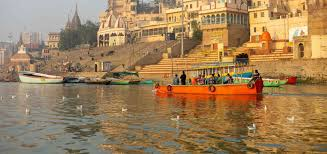

The city, known as Benares until the 18th century, is an important Hindu pilgrimage site, and its temples are regarded as some of the holiest in the world. People come to Varanasi not only in search of worship but also to make offerings to the river, which Hindus believe is a gateway to heaven.
Early history
- The city, known as Benares until the 18th century.
- It is an important Hindu pilgrimage site, and its temples are regarded as some of the holiest in the world
- People come to Varanasi not only in search of worship but also to make offerings to the river, which Hindus believe is a gateway to heaven.
- Varanasi is one of India's most culturally rich and historic cities, but it has also long been regarded as a religious centre.
send email 